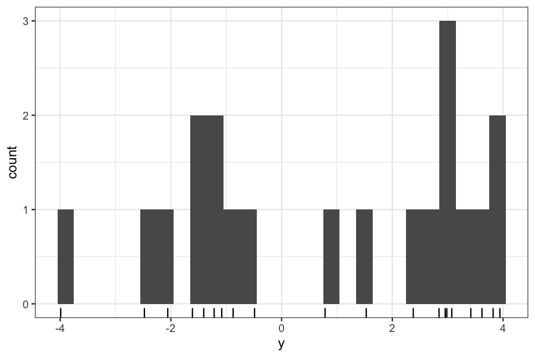

Agenda today
Last day of optimization section
The EM algorithm
Reading
Goal, as usual: Maximize a likelihood
The idea behind EM:
There are some likelihoods that would be easy to maximize if we just had a little bit of extra data
We can guess at what the missing data should be and find the parameters that maximize the likelihood based on our guess.
We then alternate between guessing at the missing data based on the current parameter estimates and estimating the parameters based on the guesses at the missing data.
Suppose we have a set of points measured on one variable.
We think that they come from two clusters, and we want to find the centers of those clusters.

We can set up the following model for the data:
\[ \begin{align*} Z_i &=\begin{cases} 1 & \text{w.p. } p\\ 0 & \text{w.p. } 1 - p \end{cases}\\ Y_i \mid Z_i &\sim N(\theta_{Z_i}, 1) \end{align*} \]
\(Y_i\), \(i = 1,\ldots, n\) are the observed data
\(Z_i\), \(i = 1,\ldots, n\) are the cluster assignments, or the “missing” or “unobserved” data.
The goal is to get maximum likelihood estimates of \(\theta_0\) and \(\theta_1\), the means of the two clusters, and \(p\), the probability of each cluster.
If we observed the \(Z_i\)’s, this problem would be simple: \(\hat \theta_0\) would be the mean of the \(Y_i\)’s for which \(Z_i = 0\), and \(\hat \theta_1\) would be the mean of the \(Y_i\)’s for which \(Z_i = 1\).
We will let \(\phi_\theta\) be the normal pdf function, \[ \phi_\theta(y) = \frac{1}{2\pi} \exp \left(-\frac{(y - \theta)^2}{ 2} \right) \] so that we don’t have to rewrite it every time.
Let \(y_i\), \(i = 1,\ldots, n\) be the observed data. In this model, the observed-data likelihood for one point is: \[ p \phi_{\theta_1}(y_i) + (1 -p)\phi_{\theta_0}(y_i) \]
And the overall observed-data log likelihood is \[ \log g(y \mid \theta) = \sum_{i=1}^n \log \left( p \phi_{\theta_1}(y_i) + (1 -p)\phi_{\theta_0}(y_i) \right) \]
Note: this problem is not as well-behaved as the ones we have seen before, the log likelihood in general has multiple local maxima.
Suppose we have observed data \(Y\), missing data \(Z\), complete data \(X = (Y, Z)\), and parameters \(\theta\).
\(f(X\mid \theta)\) is the complete-data likelihood, \(g(Y \mid \theta)\) is the observed-data likelihood.
We would like to maximize \(g(Y \mid \theta)\) (or \(\log g(Y \mid \theta)\))
Start with an initial estimate of the parameters \(\theta^{(0)}\)
While you haven’t converged yet, repeat the following two steps:
E step: compute \[ Q(\theta \mid \theta^{(n)}) = E[\log f(X \mid \theta) \mid Y, \theta^{(n)}] \]
M step: Let \(\theta^{(n+1)}\) be the solution to \[ \text{maximize}_\theta Q(\theta \mid \theta^{(n)}) \]
Our parameters are \(\theta\) and \(p\), with current estimates \(\theta^{(n)}\) and \(p^{(n)}\). The complete-data log likelihood is
\[ \log f(Y, Z \mid \theta, p) = \sum_{i=1}^n [(1 - z_i) \log(\phi_{\theta_0}(y_i)) + z_i \log(\phi_{\theta_1}(y_i))] + \sum_{i=1}^n [(1 - z_i) \log(1 - p) + z_i \log p] \]
In the E step, we compute the expectation of \(\log f(y, z, \mid \theta)\), conditional on the observed values of \(y\) and the current estimate of \(\theta\), \(\theta^{(n)}\).
\[ \begin{align*} E[\log \;&f(Y, Z \mid \theta, p) \mid Y = y, \theta= \theta^{(n)}, p = p^{(n)}] \\ &= \sum_{i=1}^n \left[(1 - E[z_i \mid Y = y, \theta= \theta^{(n)}])\log(\phi_{\theta^{(n)}_0}(y_i)) + E[z_i \mid Y = y, \theta= \theta^{(n)}] \log(\phi_{\theta^{(n)}_1}(y_i))\right] +\\ &\quad \sum_{i=1}^n\left [(1 - E[z_i \mid Y = y, \theta= \theta^{(n)}]) \log(1 - p^{(n)}) + E[z_i \mid Y = y, \theta= \theta^{(n)}]\log p^{(n)}\right] \end{align*} \]
Finally: \[ E[z_i \mid Y = y, \theta= \theta^{(n)}] = \frac{p^{(n)}\phi_{\theta^{(n)}_1}(y_i)}{p^{(n)}\phi_{\theta^{(n)}_1}(y_i) + (1 - p^{(n)})\phi_{\theta^{(n)}_0}(y_i)} \]
Suppose our current estimates are \(\theta_0^{(n)} = -1\), \(\theta_2^{(n)} = 2\), and \(p^{(n)} = .5\)
We can compute the quantities from the previous slide for the data we generated:
theta0 <- -1
theta1 <- 2
p <- .5
expected_z <- p * (dnorm(y, mean = theta1)) /
(p * (dnorm(y, mean = theta1)) + (1 - p) * dnorm(y, mean = theta0))
cbind(y, expected_z) %>% head() %>% round(digits = 3)## y expected_z
## [1,] -0.488 0.049
## [2,] -1.610 0.002
## [3,] 2.379 0.996
## [4,] 0.785 0.702
## [5,] -0.875 0.016
## [6,] 2.955 0.999You can either go through the analysis, or you can notice that maximizing \(E[\log f(Y, Z \mid \theta, p) \mid Y = y, \theta = \theta^{(n)}, p = p^{(n)}]\) is simply a problem of estimating the mean of a normal distribution with weights on the samples.
If we let \(\gamma_i = E[z_i \mid Y = y, \theta= \theta^{(n)}]\), then our new parameters are \[ \begin{align*} \theta^{(n+1)}_0 &= \frac{\sum_{i=1}^n (1 - \gamma_i) y_i}{\sum_{i=1}^n (1 - \gamma_i)}\\ \theta^{(n+1)}_1 &= \frac{\sum_{i=1}^n \gamma_i y_i}{\sum_{i=1}^n \gamma_i}\\ p^{(n+1)} &= \sum_{i=1}^n \gamma_i / n \end{align*} \]
Let’s look at what the M step looks like on our data.
Remember our previous parameter estimates were \(\theta_0^{(n)} = -1\), \(\theta_2^{(n)} = 2\), and \(p^{(n)} = .5\). The true centers are at \(-2\) and \(3\).
## [1] 2.88475## [1] -1.599996## [1] 0.536838Blood typing has to do with the “ABO” locus.
Three alleles, A, B, and O
Every individual has two copies (so AA, BB, AO, BO, AB, OO are the possible genotypes)
A and B are dominant over O, so we blood typing allows us to observe the presence of A, the presence of B, the presence of both, or the presence of neither (A, B, AB, O are the possible phenotypes)
If we see phenotype A, the genotype could be either AO or AA, if we see phenotype B, the genotype could be either BO or BB, phenotype AB always corresponds to genotype AB, and phenotype O always corresponds to genotype O.
Our goal: estimate the population proportions \(p_A\), \(p_B\), and \(p_O\).
If we observed genotypes, this would be easy: count the number of alleles of each type and divide by the total number of alleles.
We can’t see genotypes, only phenotypes, so we consider the genotypes missing data and use EM.
\(X\) is the complete data (number of individuals with AA, BB, AO, BO, AB, OO genotypes)
\(Y\) is the observed data (number of individuals with A, B, AB, O phenotypes)
Step 1: Write down the complete data log likelihood
Hardy-Weinberg (a law from population biology) tells us the probability of each genotype given the population allele proportions under the assumption of random assortative mating.
\(p_{AA} = p_A^2\)
\(p_{BB} = p_B^2\)
\(p_{AO} = 2 p_A p_O\)
\(p_{BO} = 2 p_B p_O\)
\(p_{AB} = 2 p_A p_B\)
\(p_{OO} = p_O^2\)
Therefore, the complete-data log likelihood is: \[ \log f(X \mid p_A, p_B, p_O) = n_{AA} \log p_A^2 + n_{AO} \log(2 p_A p_O) + n_{BB} \log p_B^2 + n_{BO} \log (2 p_B p_O) + n_{AB} \log (2p_A p_B) + n_O \log p_O^2 + C \]
Step 2: Write down expectation of complete data log likelihood
\(E(\log f(X \mid p_A, p_B, p_O))\) will involve the expected genotype counts given the observed data. These are:
\(E(n_{AB} \mid Y, p_A, p_B, p_O) = n_{AB}\)
\(E(n_{OO} \mid Y, p_A, p_B, p_O) = n_{O}\)
\(E(n_{AA} \mid Y, p_A, p_B, p_O) = n_A \frac{p_A^2}{p_A^2 + 2 p_A p_O}\)
\(E(n_{AO} \mid Y, p_A, p_B, p_O) = n_A \frac{2 p_A p_O}{p_A^2 + 2 p_A p_O}\)
And similarly for \(n_{BB}\) and \(n_{BO}\).
Step 3: Write down the values of \(p_A\), \(p_B\), and \(p_O\) that maximize the expected complete data log likelihood
\(p_A = \frac{2n_{AA} + n_{AO} + n_{AB}}{2n}\)
\(p_B = \frac{2n_{BB} + n_{BO} + n_{AB}}{2n}\)
\(p_O = \frac{n_{AO} + n_{BO} + 2n_{OO}}{2n}\)
(Can derive with Lagrange multipliers)
#' @param theta_0: A list with elements pA, pB, and pO
#' @param observed: A list with elements nA, nB, nAB, nO
allele_em <- function(theta_start, observed, niter) {
theta <- theta_start
theta_iterates <- list()
for(i in 1:niter) {
complete_data <- e_step(theta, observed)
theta <- m_step(theta, complete_data)
theta_iterates[[i]] <- theta
}
return(theta_iterates)
}
#' @param theta: A list with elements pA, pO, and pO
#' @param observed: A list with elements nA, nB, nAB, nO
e_step <- function(theta, observed) {
complete_data <- list()
complete_data[["nAA"]] <- observed[["nA"]] * theta[["pA"]]^2 / (theta[["pA"]]^2 + 2 * theta[["pA"]] * theta[["pO"]])
complete_data[["nBB"]] <- observed[["nB"]] * theta[["pB"]]^2 / (theta[["pB"]]^2 + 2 * theta[["pB"]] * theta[["pO"]])
complete_data[["nAO"]] <- observed[["nA"]] * 2 * theta[["pA"]] * theta[["pO"]] / (theta[["pA"]]^2 + 2 * theta[["pA"]] * theta[["pO"]])
complete_data[["nBO"]] <- observed[["nB"]] * 2 * theta[["pB"]] * theta[["pO"]] / (theta[["pB"]]^2 + 2 * theta[["pB"]] * theta[["pO"]])
complete_data[["nAB"]] <- observed[["nAB"]]
complete_data[["nOO"]] <- observed[["nOO"]]
return(complete_data)
}
#' @param complete_data: A list with elements nAA, nBB, nAO, nBO, nAB, nOO
#' @param theta: A list with elements pA, pB, and pO
m_step <- function(theta, complete_data) {
theta_new <- list()
n <- sum(unlist(complete_data))
theta_new[["pA"]] <- (2 * complete_data[["nAA"]] + complete_data[["nAO"]] + complete_data[["nAB"]]) / (2 * n)
theta_new[["pB"]] <- (2 * complete_data[["nBB"]] + complete_data[["nBO"]] + complete_data[["nAB"]]) / (2 * n)
theta_new[["pO"]]<- (complete_data[["nAO"]] + complete_data[["nBO"]] + 2 * complete_data[["nOO"]]) / (2 * n)
return(theta_new)
}observed <- list(nA = 186, nB = 38, nAB = 13, nOO = 284)
theta_start <- list(pA = .3, pB = .2, pO = .5)
allele_em(theta_start, observed, niter = 5) %>% bind_rows()## # A tibble: 5 × 3
## pA pB pO
## <dbl> <dbl> <dbl>
## 1 0.232 0.0550 0.713
## 2 0.216 0.0503 0.734
## 3 0.214 0.0502 0.736
## 4 0.214 0.0501 0.736
## 5 0.214 0.0501 0.736We can prove that EM is an ascent algorithm
Tends to converge rather slowly
No guarantee of getting a global maximum of the likelihood (but sometimes this is a good thing…)
When is this useful?
When it is easy to get distributions over the missing variables given the current parameter estimates.
When the problem simplifies after introduction of the missing variables.
These two conditions often hold in latent variable models, which also tend not to be convex.